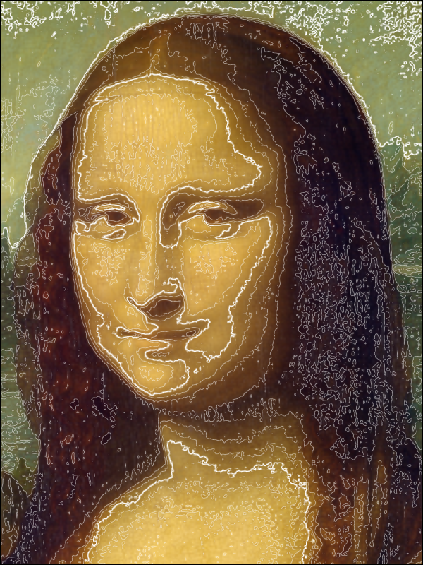

Note
Click here to download the full example code
Apply Contour Filter on an Image¶
Simple use of SceneCanvas to display an Image.
import sys
from vispy import scene, app
from vispy.visuals.filters import IsolineFilter
from vispy.io import load_data_file, read_png
canvas = scene.SceneCanvas(keys='interactive')
canvas.size = 600, 800
canvas.show()
# Set up a viewbox to display the image with interactive pan/zoom
view = canvas.central_widget.add_view()
interpolation = 'bicubic'
img_data = read_png(load_data_file('mona_lisa/mona_lisa_sm.png'))
image = scene.visuals.Image(img_data, interpolation=interpolation,
parent=view.scene, method='impostor')
level = 10
iso = IsolineFilter(level=level, width=1., color='white')
# Set 2D camera (the camera will scale to the contents in the scene)
view.camera = scene.PanZoomCamera(aspect=1)
# flip y-axis to have correct aligment
view.camera.flip = (0, 1, 0)
# select face part
view.camera.rect = (160, 130, 240, 200)
canvas.title = ('Spatial Filtering using %s Filter - Isoline %d level'
% (image.interpolation, iso.level))
# get interpolation functions from Image
names = image.interpolation_functions
act = names.index(interpolation)
# Implement key presses
@canvas.events.key_press.connect
def on_key_press(event):
global act, level, first, interpolation
if event.key in ['Left', 'Right']:
if event.key == 'Right':
step = 1
else:
step = -1
act = (act + step) % len(names)
image.interpolation = names[act]
if event.key in ['Up', 'Down']:
iso.level += 1 if event.key == 'Up' else -1
canvas.title = ('Spatial Filtering using %s Filter - Isoline %d level'
% (image.interpolation, iso.level))
canvas.update()
# attaching of isoline filter via timer
def on_timer1(event):
image.attach(iso)
canvas.update()
timer1 = app.Timer('auto', iterations=1, connect=on_timer1, start=True)
if __name__ == '__main__' and sys.flags.interactive == 0:
app.run()
Total running time of the script: ( 0 minutes 3.123 seconds)